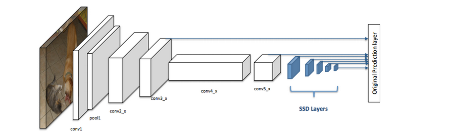
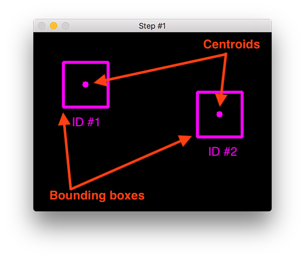
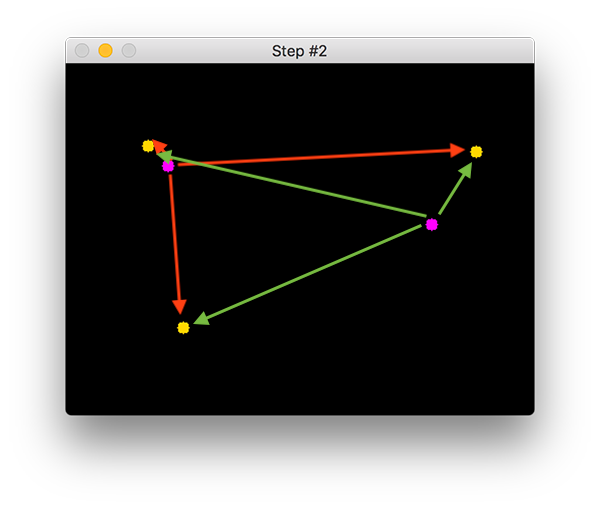

Object Tracking
Object tracking project using centroid tracking algorithm
Introduction
Object tracking is the process that starts with the detection of the object of interest and identification of its location in terms of bounding boxes, followed by tracking it as it moves across a series of video frames. The detection of the object of interest and the construction of its bounding box is guaranteed in this project by a pre-trained Single-Shot Detector (weights and architecture of the caffe model can be obtained here). The understanding and implementation of SSD is beyond the scope of this project, so I am just going to provide a brief introduction of this detector and why I chose it.
SSD why and how it works
In the context of object detection there are different techniques that can be exploited:
- Window slider: a window is slid across the frame and the goal is to classify the image inside the window as desired type or not.
The first problem with this method is that the size of the window doesn’t guarantee us that the object is inside the
window. The second problem is related to the fact that objects con have different shapes so the window has to have the correct aspect ratio.
To solve this problems we have to try different sizes/shapes of sliding window but this is too computationally expensive.

- R-CNN and Fast R-CNN: this methods use a two-step approach, first the regions where the object is expected to be are identified and then the object is detected considering only this regions. This methods produce the most accurate detections but they are computationally expensive and this results in a slow frame rate when making real-time inference.
- YOLO (You Only Look Once): it is a single-step approach so it is faster compared to R-CNN and Fast R-CNN, but it is less accurate.
-
Single-Shot Detector (SSD): it is a single-step approach as YOLO but is more accurate. The SSD consists of a backbone model and a SSD head. The backbone model is a pre-trained image classification network (where final fully connected classification layer has been removed)
and serves as a feature extractor. The SSD head adds convolutional layers to the backbone and outputs the bounding box of the object of interest.
in the figure below the white boxes represent the backbone model and the blue ones the SSD head.

Centroid tracking algorithm
Now that we have defined our object detector, we can exploit it to build our object tracker. In order to do that I used a centroid tracking algorithm. This algorithm consists of five steps:
-
Step 1: the algorithm takes as input the set of x-y coordinates that define the
bounding boxes (obtained by SSD), related to each detected object of interest in the first frame of the video.
The centroid of each bounding box is computed and a unique ID is assigned to each of them. The figure below
gives a graphical representation of what is going on.

-
Step 2: for every subsequent frame in the video "step 1" is applied, but in this case
we have to understand if we can to apply the old ID of the previous frame to the object detected in the current frame,
or assign a new unique ID. In other words we have to understand if the objects detected in the previous frame
are the same objects that appear in the current frame. In order to do that we compute the euclidean distance
between all the centroids computed in the previous frame and the centroids computed in the new frame.
The ID of the object in the previous frame is assigned to the object of the current frame that minimize the
euclidean distance between the 2 centroids. If this minimum centroid distance is greater than a given
threshold, or the number of objects detected in the current frame is greater than the number of objects
in the previous frame a new unique ID is assigned.
